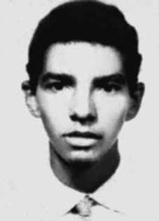

Marcos
Nonato
da Fonseca
CIRCUNSTÂNCIAS DA MORTE
A versão dos órgãos de segurança sobre a morte de Ana Maria e outros dois militantes da ALN, Iuri Xavier Pereira e Marcos Nonato da Fonseca, foi divulgada nos jornais O Globo, Jornal do Brasil e Estado de S. Paulo nas edições de 15 de junho de 1972. De acordo com a nota, “por volta das 14h, os agentes de segurança aproximaram-se dos terroristas, dando-lhes voz de prisão, tendo os citados terroristas reagido a bala de armas automáticas e metralhadoras”. Como consequência desse enfrentamento, teriam morrido “no local, os terroristas Iuri Xavier Pereira, Ana Maria Nacinovic Corrêa e Marcos Nonato da Fonseca”. ii Ainda segundo essa versão, o cerco policial teria sido montado depois de uma denúncia com o objetivo de capturar indivíduos procurados pelas forças de repressão. O confronto armado teria ocorrido no restaurante Varella, no bairro da Mooca, em São Paulo (SP), onde os agentes de segurança localizaram quatro militantes da ALN – três dos quais morreram, enquanto o quarto, Antônio Carlos Bicalho Lana, conseguiu escapar. Segundo documento do CIE, a Informação nº 0571/S- 102-A11-CIE, datada de 12 de junho de 1972, Após assalto à firma D. F. Vasconcelos, os órgãos de segurança desenvolveram intensas buscas na área da Grande São Paulo, e, em consequência, na manhã do dia 14 Jun 72, foram localizados 4 dos 5 terroristas que participaram do assalto a D. F. Vasconcelos, sendo reconhecidos os 4 antes nominados. Foi feito um cerco ao local, devido à alta periculosidade dos terroristas, os agentes de segurança passaram a vigiar e controlar os seus passos, aguardando um momento propício para efetuar as prisões. […] por volta das 14 horas, os agentes da segurança aproximaram-se dos terroristas, dando-lhes voz de prisão, tendo os citados terroristas prontamente reagido à bala de armas automáticas e metralhadora. No intenso tiroteio que estabeleceu, os terroristas conseguiram ferir: – dois agentes da Segurança; – a menina Irene Dias, de 3 anos de idade…; Rodolfo Aschrman… que passava pelo local.iii Uma apostila da Escola Nacional de Informações (EsNI), de 1974, intitulada “Contra subversão”, inclui, na página 233, um croqui com detalhes da operação: em duplas, os agentes posicionaram-se dentro do restaurante, na carpintaria, no terreno ao lado do local e no telhado de um posto de gasolina, apoiados por um carro estacionado em uma das esquinas.iv Evidências, no entanto, contestam a versão da morte em tiroteio e indicam que os militantes foram vítimas de execução e, provavelmente, de tortura, nas dependências do DOI-CODI do II Exército (SP). Apesar de tratar-se de confronto armado em local público, não foi realizada perícia de local que permitisse comprovar o suposto tiroteio, e os corpos dos militantes mortos não foram levados para o necrotério. Também não foram localizados documentos que indiquem a relação das armas utilizadas ou mostrem fotos do local, como também não foram encontrados exames de corpo de delito dos policiais ou dos transeuntes feridos, mencionados na nota divulgada. Em depoimento prestado à Comissão da Verdade do estado de São Paulo Rubens Paiva, em 24 de fevereiro de 2014, Francisco de Andrade, preso entre novembro de 1971 a novembro de 1972 na OBAN, declarou: Bom, numa dessas voltas, porque, possivelmente, deve ser do meio da tarde pra frente, porque esses depoimentos eram sempre à tarde, né? Nunca aconteciam de manhã esses depoimentos oficiais no DOPS. Na volta de um desses depoimentos, quando o carro da OBAN parou no pátio de estacionamento… Parava num pátio, você vinha andando e entrava… Que é aqui nessa antiga delegacia aqui da Rua Tutoia. Tinha um pátio lá fora e você andava uma coisa meio aberta e entrava num portão de ferro que dava acesso à delegacia. Antes desse portão de ferro, na hora que a gente estava voltando, eu vi três corpos no chão, que era o Iuri, a Ana Maria e o Marcos. Mortos. Vestidos. Você sempre tem insistido nessa coisa que eles quando legalizam estão todos… Estavam lá. Também uma coisa como se tivesse acontecido naquele momento. Mas nesse dia, ali no pátio da OBAN estavam os três ali e eles estavam mortos. Isso eu tenho certeza, eu vi bem, eu conhecia muito bem. v Seu testemunho é corroborado pelas fichas de identificação de Ana Maria e Iuri Xavier, feitas no DOI-CODI do II Exército, que registram como data de entrada nesse órgão o dia 14 de junho de 1972.vi Nas investigações realizadas pela CEMDP, o perito Celso Nenevê, após análise dos casos e dos materiais periciais disponíveis, recomendou a exumação e exame dos restos mortais dos militantes mortos. Os familiares decidiram promover por conta própria a exumação dos restos mortais de Ana Maria, Iuri Xavier e Marcos Nonato, que, foram examinados pelo antropólogo forense Luís Fondebrider, da Equipe Argentina de Antropologia Forense, e pelo perito brasileiro Nelson Massini. A análise comparativa entre o laudo de necropsia, concluído no Instituto Médio Legal de São Paulo em 20 de junho de 1972, e o laudo produzido pelos peritos mencionados em janeiro de 1997 evidencia grandes contradições. A requisição de exame e o laudo de exame necroscópico de Marcos corroboram a versão de tiroteio,vii enquanto a certidão de óbito indica como causa de morte “anemia aguda traumática”, tendo sido o corpo sepultado no cemitério da Guanabara.viii A comparação entre o Laudo de Exame Necroscópico de Marcos Nonato da Fonseca, datado de 20 de junho de 1972 e assinado pelos médicos legistas Issac Abramovitc e Abeylard de Queiroz Orsini,ix com os resultados da análise realizada pelos peritos contratados pelos familiares, evidencia incontornáveis contradições. O laudo produzido em 1972 reconheceu que Marcos apresentava: Ferimento com as características daqueles produzidos pela entrada de projétil de arma de fogo, localizado na linha média da face anterior da porção inferior da região cervical. O projétil, dirigido de frente para trás, de cima para baixo e da direita para a esquerda, fraturou a clavícula esquerda, transfixou o lobo superior do pulmão esquerdo provocou derrame hemorrágico na pleura esquerda, transfixou a omoplata esquerda e saiu pela região escapular esquerda. x De acordo com a interpretação dos peritos Issac Abramovitc e Abeylard de Queiroz Orsini, os ferimentos foram produzidos em tiroteio. Entretanto, no gráfico apresentado por Massini, anexado ao laudo, resta comprovado que os tiros foram disparados de cima para baixo e que, dada a localização dos ferimentos, estes não poderiam ter sido produzidos em tiroteio. Trata-se de ferimentos típicos de execução. O exame das fotos localizadas nos arquivos do DOPS/SP evidenciou, por outra parte, a existência de lesões indicativas de tortura, não descritas no laudo de 1972: “ferimento contundente com área equimótica na região mamária; equimoses profundas sobre os olhos, nariz edemaciado; ferimento corto-contuso próximo à axila esquerda”.xi Em audiência realizada pela Comissão da Verdade de São Paulo, em 24 de fevereiro de 2014, Iara Xavier Pereira afirmou que: Os agentes envolvidos na captura de Ana, Iuri e Marcos eram o então comandante do DOI-CODI, Carlos Alberto Brilhante Ustra, o senhor Pedro Lima Moêzia de Lima, o Dulcídio… Vocês veem que os nomes se repetem sempre, né? Dulcídio Wanderley Boschilia, Renada D’Andréa, Jair Romeu, Isaac Abramovitc, Abeylard de Queiroz Orsini, Arnaldo Siqueira e o declarante Pedro de Oliveira […]xii Os restos mortais de Marcos foram trasladados e sepultados no Cemitério São João Batista, no Rio de Janeiro (RJ).
The version of the security agencies about the death of Ana Maria and two other ALN militants, Iuri Xavier Pereira and Marcos Nonato da Fonseca, was published in the newspapers O Globo, Jornal do Brasil and Estado de S. Paulo in the editions of June 15, 1972. According to the note, “around 2 pm, the security agents approached the terrorists, arresting them, and the aforementioned terrorists reacted to bullets from automatic weapons and machine guns.” As a result of this confrontation, “terrorists Iuri Xavier Pereira, Ana Maria Nacinovic Corrêa and Marcos Nonato da Fonseca died on site”. ii Still according to this version, the police siege would have been set up after a tip with the aim of capturing individuals wanted by the repression forces. The armed confrontation reportedly took place at the Varella restaurant, in the Mooca neighborhood, in São Paulo (SP), where security agents located four ALN militants – three of whom died, while the fourth, Antônio Carlos Bicalho Lana, managed to escape. According to CIE document, Information No. 0571/S- 102-A11-CIE, dated June 12, 1972, After the assault on the firm D. F. Vasconcelos, security agencies carried out intense searches in the Greater São Paulo area, and, consequently, on the morning of June 14, 72, 4 of the 5 terrorists who participated in the assault on D. F. Vasconcelos were located, with the 4 previously recognized nominees. A siege was placed on the site, due to the high danger of the terrorists, security agents began to monitor and control their actions, waiting for a suitable moment to make the arrests. […] at around 2 pm, security agents approached the terrorists, arresting them, and the aforementioned terrorists promptly reacted to bullets from automatic weapons and machine guns. In the intense shootout that ensued, the terrorists managed to injure: – two Security agents; – girl Irene Dias, 3 years old…; Rodolfo Aschrman... who was passing by the site.iii A booklet from the National Information School (EsNI), from 1974, entitled “Against subversion”, includes, on page 233, a sketch with details of the operation: in pairs, the agents positioned themselves inside the restaurant, in the carpentry shop, on the land next to the site and on the roof of a gas station, supported by a car parked on one of the corners.iv Evidence, however, disputes the version of death in a shootout and indicate that the militants were victims of execution and, probably, torture, on the premises of the DOI-CODI of the II Army (SP). Despite the fact that it was an armed confrontation in a public place, no site investigation was carried out to prove the alleged shooting, and the bodies of the dead militants were not taken to the morgue. There were also no documents found indicating the list of weapons used or showing photos of the scene, nor were any forensic examinations of the police officers or injured bystanders, mentioned in the released note, found. In a statement given to the Truth Commission of the state of São Paulo Rubens Paiva, on February 24, 2014, Francisco de Andrade, imprisoned between November 1971 and November 1972 at OBAN, stated: Well, in one of those rounds, because, possibly, it must be from mid-afternoon onwards, because these statements were always in the afternoon, right? These official statements never took place in the morning at the DOPS. On the way back from one of these statements, when the OBAN car stopped in the parking lot... It stopped in a yard, you walked and went in... Which is here in this old police station here on Tutoia Street. There was a courtyard outside and you walked through something half open and entered an iron gate that gave access to the police station. Before this iron gate, when we were returning, I saw three bodies on the ground, which were Iuri, Ana Maria and Marcos. Dead. Dresses. You have always insisted on this thing that when they legalize they are all… They were there. Also something as if it had happened at that moment. But that day, there in the OBAN courtyard were the three of them and they were dead. I'm sure of that, I saw it well, I knew it very well. v Their testimony is corroborated by the identification records of Ana Maria and Iuri Xavier, made at the DOI-CODI of the II Army, which record June 14, 1972 as the date of entry into that body. The family members decided to carry out the exhumation of the remains of Ana Maria, Iuri Xavier and Marcos Nonato on their own, which were examined by forensic anthropologist Luís Fondebrider, from the Argentine Forensic Anthropology Team, and by Brazilian expert Nelson Massini. The comparative analysis between the autopsy report, completed at the Instituto Médio Legal de São Paulo on June 20, 1972, and the report produced by the aforementioned experts in January 1997 highlights major contradictions. The examination request and the necroscopic examination report on Marcos corroborate the shooting version,vii while the death certificate indicates “acute traumatic anemia” as the cause of death, with the body being buried in the Guanabara cemetery.viii The comparison between the Necroscopic Examination Report of Marcos Nonato da Fonseca, dated June 20, 1972 and signed by the coroners Issac Abramovitc and Abeylard de Queiroz Orsini,ix with the results of the analysis carried out by experts hired by the family members, highlights unavoidable contradictions. The report produced in 1972 recognized that Marcos had: Wound with the characteristics of those caused by the entry of a firearm projectile, located in the midline of the anterior face of the lower portion of the cervical region. The projectile, directed from front to back, from top to bottom and from right to left, fractured the left clavicle, transfixed the upper lobe of the left lung, caused a hemorrhagic stroke in the left pleura, transfixed the left shoulder blade and exited through the left scapular region. x According to the interpretation of experts Issac Abramovitc and Abeylard de Queiroz Orsini, the injuries were caused by gunfire. However, in the graph presented by Massini, attached to the report, it is proven that the shots were fired from top to bottom and that, given the location of the injuries, they could not have been produced in a shootout. These are typical execution injuries. The examination of the photos located in the DOPS/SP archives showed, on the other hand, the existence of injuries indicative of torture, not described in the 1972 report: “blunt injury with ecchymotic area in the breast region; deep bruises over the eyes, swollen nose; blunt-blunt wound close to the left armpit”.xi In a hearing held by the São Paulo Truth Commission, on February 24, 2014, Iara Xavier Pereira stated that: The agents involved in the capture of Ana, Iuri and Marcos were the then commander of DOI-CODI, Carlos Alberto Brilhante Ustra, Pedro Lima Moêzia de Lima, Dulcídio… You see that the names are always repeated, right? Dulcídio Wanderley Boschilia, Renada D’Andréa, Jair Romeu, Isaac Abramovitc, Abeylard de Queiroz Orsini, Arnaldo Siqueira and the declarant Pedro de Oliveira […]xii Marcos’ mortal remains were transferred and buried in the São João Batista Cemetery, in Rio de Janeiro (RJ).
La versión de los organismos de seguridad sobre la muerte de Ana María y otros dos militantes de la ALN, Iuri Xavier Pereira y Marcos Nonato da Fonseca, fue publicada en los diarios O Globo, Jornal do Brasil y Estado de S. Paulo en las ediciones del 15 de junio de 1972. Según la nota, “hacia las 14 horas, los agentes de seguridad se acercaron a los terroristas, arrestándolos, y los terroristas antes mencionados reaccionaron a las balas de armas automáticas y ametralladoras”. Como resultado de este enfrentamiento, “murieron en el lugar los terroristas Iuri Xavier Pereira, Ana Maria Nacinovic Corrêa y Marcos Nonato da Fonseca”. ii Aún según esta versión, el cerco policial se habría armado luego de una pista con el objetivo de capturar a personas buscadas por las fuerzas de represión. El enfrentamiento armado habría ocurrido en el restaurante Varella, en el barrio de Mooca, en São Paulo (SP), donde agentes de seguridad localizaron a cuatro militantes del ALN, tres de los cuales murieron, mientras que el cuarto, Antônio Carlos Bicalho Lana, logró escapar. Según documento del CIE, Información N° 0571/S-102-A11-CIE, de 12 de junio de 1972, Luego del asalto a la empresa D. F. Vasconcelos, organismos de seguridad realizaron intensas búsquedas en el área del Gran São Paulo, y, en consecuencia, en la mañana del 14 de junio de 72, fueron localizados 4 de los 5 terroristas que participaron en el asalto al D. F. Vasconcelos, siendo los 4 anteriores nominados reconocidos. Se colocó un cerco en el lugar, debido a la alta peligrosidad de los terroristas, agentes de seguridad comenzaron a monitorear y controlar sus acciones, esperando el momento oportuno para realizar las detenciones. […] alrededor de las 2 de la tarde, agentes de seguridad se acercaron a los terroristas, deteniéndolos, y los mencionados terroristas reaccionaron prontamente a los disparos de armas automáticas y ametralladoras. En el intenso tiroteo que se produjo a continuación, los terroristas lograron herir: – dos agentes de Seguridad; – niña Irene Dias, 3 años…; Rodolfo Aschrman... quien pasaba por el sitio.iii Un folleto de la Escuela Nacional de Información (EsNI), de 1974, titulado “Contra la subversión”, incluye, a página 233, un croquis con detalles del operativo: por parejas, los agentes se posicionaron dentro del restaurante, en la carpintería, en el terreno aledaño al sitio y en el techo de una gasolinera, apoyados en un auto estacionado en una de las esquinas.iv Las pruebas, sin embargo, cuestiona la versión de muerte en un tiroteo e indican que los militantes fueron víctimas de ejecución y, probablemente, tortura, en las instalaciones del DOI-CODI del II Ejército (SP). A pesar de que se trató de un enfrentamiento armado en un lugar público, no se realizó ninguna investigación del lugar para comprobar el presunto tiroteo y los cuerpos de los militantes muertos no fueron trasladados a la morgue. Tampoco se encontraron documentos que indiquen la lista de armas utilizadas ni fotografías del lugar, ni se encontraron exámenes forenses a los policías o transeúntes heridos, mencionados en la nota difundida. En declaración dada ante la Comisión de la Verdad del estado de São Paulo Rubens Paiva, el 24 de febrero de 2014, Francisco de Andrade, preso entre noviembre de 1971 y noviembre de 1972 en la OBAN, afirmó: Bueno, en una de esas rondas, porque, posiblemente, debe ser a partir de media tarde, porque esas declaraciones siempre fueron en la tarde, ¿no? Estas declaraciones oficiales nunca tuvieron lugar por la mañana en el DOPS. Al volver de una de estas declaraciones, cuando el coche de la OBAN se detuvo en el aparcamiento... Se detuvo en un patio, caminaste y entraste... Que está aquí en esta antigua comisaría de aquí en la calle Tutoia. Afuera había un patio y pasabas por algo entreabierto y entrabas por una verja de hierro que daba acceso a la comisaría. Ante este portón de hierro, cuando regresábamos, vi tres cuerpos en el suelo, que eran Iuri, Ana María y Marcos. Muerto. Vestidos. Siempre has insistido en esto de que cuando legalicen están todos… Estaban ahí. También algo como si hubiera sucedido en ese momento. Pero ese día, allí en el patio de OBAN estaban los tres y estaban muertos. De eso estoy seguro, lo vi bien, lo sabía muy bien. v Su testimonio es corroborado por las actas de identificación de Ana María e Iuri Xavier, realizadas en el DOI-CODI del II Ejército, que registran el 14 de junio de 1972 como fecha de ingreso a dicho organismo. Los familiares decidieron realizar por su cuenta la exhumación de los restos de Ana María, Iuri Xavier y Marcos Nonato, que fueron examinados por el antropólogo forense Luís Fondebrider, del Equipo Argentino de Antropología Forense, y por el perito brasileño Nelson Massini. El análisis comparativo entre el informe de la autopsia, realizado en el Instituto Medio Legal de São Paulo el 20 de junio de 1972, y el informe elaborado por los peritos antes mencionados en enero de 1997 pone de relieve importantes contradicciones. La solicitud de examen y el informe de examen necroscópico de Marcos corroboran la versión del fusilamiento,vii mientras que el certificado de defunción señala como causa de muerte “anemia traumática aguda”, siendo el cuerpo enterrado en el cementerio de Guanabara.viii La comparación entre el Informe de examen necroscópico de Marcos Nonato da Fonseca, de fecha 20 de junio de 1972 y firmado por los médicos forenses Issac Abramovitc y Abeylard de Queiroz Orsiniix, con los resultados de el análisis realizado por peritos contratados por los familiares, pone de relieve contradicciones inevitables. El informe elaborado en 1972 reconoció que Marcos presentaba: Herida con las características de las provocadas por el ingreso de un proyectil de arma de fuego, ubicada en la línea media de la cara anterior de la porción inferior de la región cervical. El proyectil, dirigido de adelante hacia atrás, de arriba hacia abajo y de derecha a izquierda, fracturó la clavícula izquierda, atravesó el lóbulo superior del pulmón izquierdo, provocó un derrame cerebral hemorrágico en la pleura izquierda, atravesó el omóplato izquierdo y salió por la región escapular izquierda. x Según la interpretación de los peritos Issac Abramovitc y Abeylard de Queiroz Orsini, las heridas fueron provocadas por disparos de arma de fuego. Sin embargo, en el gráfico presentado por Massini, adjunto al informe, se acredita que los disparos fueron realizados de arriba hacia abajo y que, dada la ubicación de las heridas, no podrían haberse producido en una balacera. Estas son lesiones típicas de ejecución. El examen de las fotografías ubicadas en los archivos del DOPS/SP demostró, por otra parte, la existencia de lesiones indicativas de tortura, no descritas en el informe de 1972: “herida contundente con zona equimótica en la región mamaria; hematomas profundos en los ojos, nariz hinchada; herida contundente cerca de la axila izquierda”.xi En audiencia celebrada ante la Comisión de la Verdad de São Paulo, el 24 de febrero de 2014, Iara Xavier Pereira afirmó que: Los agentes involucrados en la captura de Ana, Iuri y Marcos fueron el entonces comandante del DOI-CODI, Carlos Alberto Brilhante Ustra, Pedro Lima Moêzia de Lima, Dulcídio… Verás que los nombres siempre se repiten, ¿no? Los restos mortales de Dulcídio Wanderley Boschilia, Renada D’Andréa, Jair Romeu, Isaac Abramovitc, Abeylard de Queiroz Orsini, Arnaldo Siqueira y el declarante Pedro de Oliveira […]xii Marcos fueron trasladados e inhumados en el Cementerio São João Batista, en Río de Janeiro (RJ).